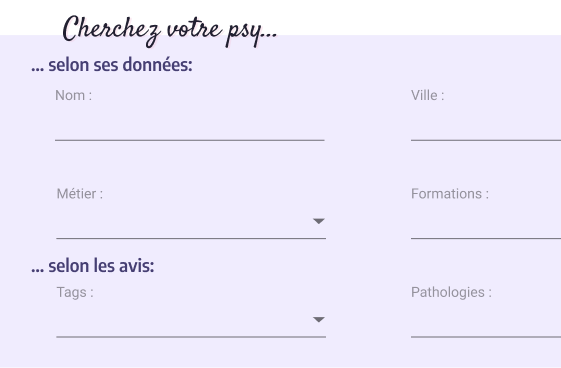
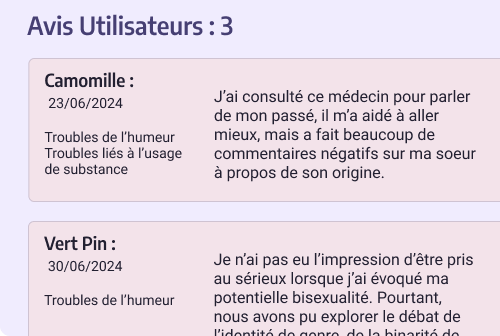
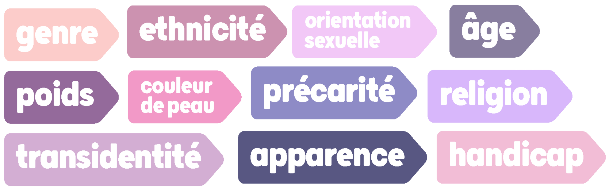

Fonctionnalités

Recherchez un·e soignant·e
par nom, métiers, pathologies, villes, tags...
Consultez
les retours d'autres personnes.


Donnez votre avis
sur votre soignant·e en créant un compte anonyme.
SafeTag vous propose un espace de recherche de praticiens de la santé mentale, incluant psychiatres, psychologues, et psychothérapeutes.
Notre plateforme remonte les données nationales de l’exercice des praticiens actuellement actifs.
Nous proposons de croiser ces données avec les avis de leurs patients, en les axant sur le sentiment de sécurité à l'égard des sujets communs de discrimination.

SafeTag est un projet de site internet de recherche et d’avis sur les professionnels de la santé mentale en France.
Nous vous offrons la possibilité, grâce aux avis d’utilisateurs, de pouvoir chercher un soignant selon sa localisation, ses honoraires, mais aussi selon les pathologies qu’al a déjà traité, les modalités d’accessibilité, mais aussi sur les différents retours au sujet des discriminations communément rencontrées pour les minorités.
SafeTag vous propose une nouvelle vision de la prise en charge de votre santé mentale, où votre bien-être est la seule et unique chose dont vous devriez avoir à vous occuper.

Recherchez un·e soignant·e
par nom, métiers, pathologies, villes, tags...
Consultez
les retours d'autres personnes.

Donnez votre avis
sur votre soignant·e en créant un compte anonyme.
contact@safetag.org